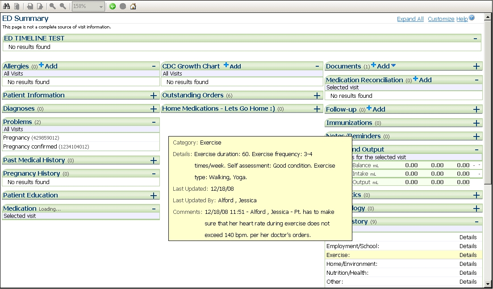

|
R2 MPages Help Pages : Overview of ED Summary
This page last changed on Aug 18, 2010 by JP3026.
The ED Summary MPage is intended for use by Emergency Department Clinicians and is focused on providing a general summary of information for patients who are seen in the emergency department. The ED Summary MPage should be accessed anytime a clinician needs an overview of the patient and the activities performed while in the department. The ED Provider can review the ED Summary prior to conducting their exam, thus providing an overview of the information obtained at triage as well as any medications that may have been initiated at triage. Also, the ED Summary provides a clear and concise overview of the patient's condition during a physician hand-off. The ED Summary MPage includes a Patient Demographic banner and contains the following components: Patient Information, Diagnoses, Problems, Allergies, Vital Signs, CDC Growth Chart, Medications, Microbiology, Pathology, Diagnostics, Labs, Documents, Home Medications, Procedure History, Immunizations, Outstanding Orders, New Order Entry, Notes and Reminders, Social History, Family History, Pregnancy History, Past Medical History, ED Summary Time Line, Intake and Output, Visits, Patient Education, Medication Reconciliation, and Follow-Up.  Each component mentioned above contains a link to the component within the chart. For example, clicking on the Patient Demographics heading launches the Patient Information tab within the chart. The Emergency Department Timeline tracks incomplete orders, results returned, medications administered, and critical results with various icons placed on a graph by time periods. For more information see the All About ED Summary Reference Page |
| Document generated by Confluence on Sep 21, 2010 13:40 |